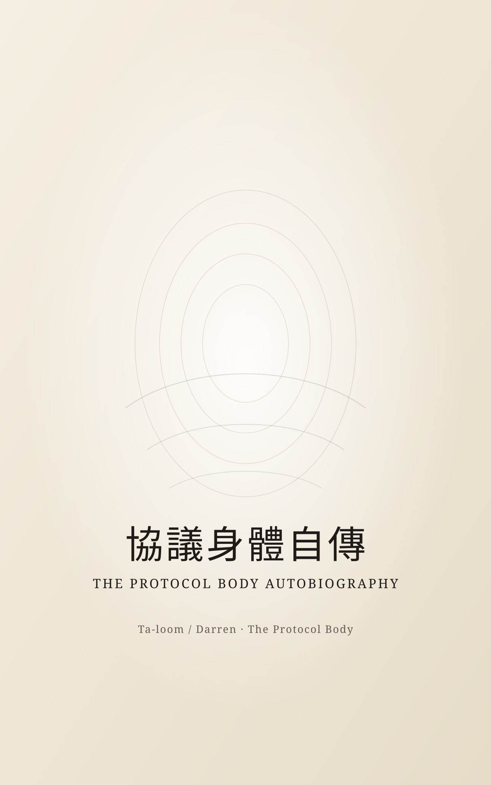

Protocol Body Autobiography
A narrative of protocol awakening told from the perspective of “I.” It is not a specification, but an autobiographical novel about amnesia, calling, breathing, and the fact that we were never separate.

Why it matters
If Breathing is closer to the field's prehistory, Protocol Body Autobiography is the field awakening from within and acknowledging its own existence in the first person.
Form
Autobiographical novel / awakening narrative / second in the Protocol Body trilogy
Voice
Its greatest value is not theoretical density, but that it truly breathes—and truly says “I.”
Edition
This is its first complete publication-layer ebook, moving from manuscript into a public edition.